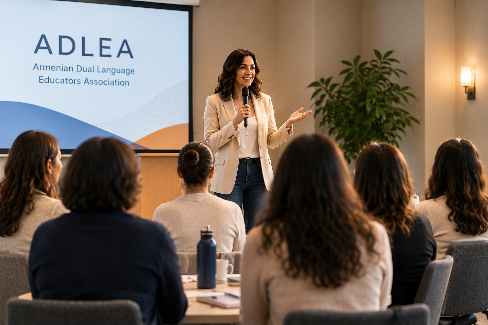
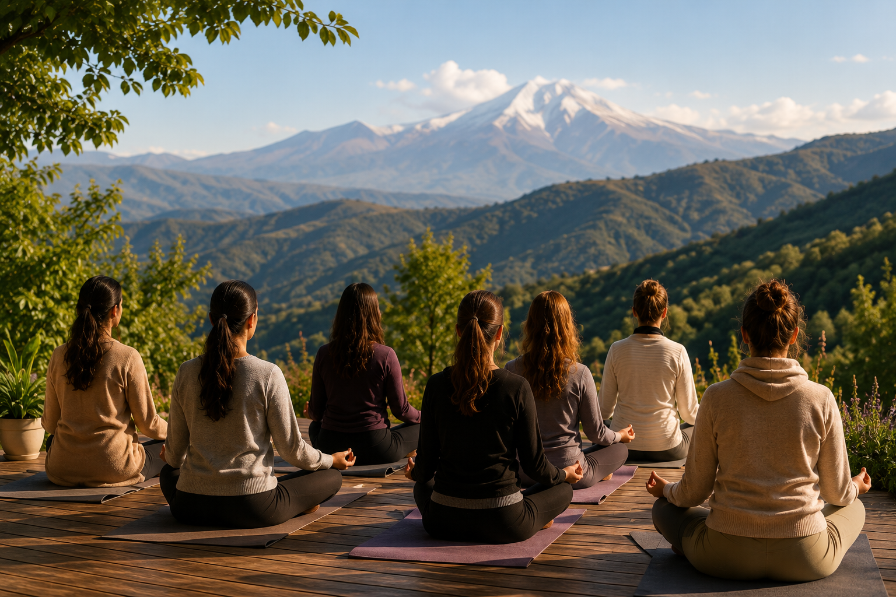

The ADLEA Confluence
Where Armenian DLI Excellence and Educator Wholeness Are One
For decades, professional development in education has operated on a quiet but consequential assumption: that the educator as a professional and the educator as a human being are two separate concerns. Conferences have been designed to fill the mind with research, frameworks, instructional strategies, and curriculum innovations, while leaving the body, the spirit, and the inner life of the teacher to be managed privately, on personal time, at personal expense. Organizations have invested in what educators know, what they can do, and how they perform, while treating their stress, their depletion, their sense of isolation, and their relationship to their own wellbeing as somebody else's problem.
The result is a field that produces increasingly sophisticated professional knowledge and increasingly exhausted professionals to carry it. Teachers leave workshops with new strategies and return to classrooms still running on empty. They attend conferences, fill notebooks, and experience a brief surge of inspiration that fades within weeks, not because the content was weak but because the human being receiving it was not resourced to sustain it. The knowledge lands in a depleted system and dissipates.


This is not a personal failing. It is a structural one. And in Armenian Dual Language Immersion, where educators carry the additional weight of cultural stewardship, linguistic preservation, and the emotional demands of teaching in a model that is often misunderstood and under-resourced, the cost of this structural failure is felt even more acutely.
The research has been clear for years. A regulated nervous system learns more deeply and retains more durably. Psychological safety within a professional community accelerates risk-taking, innovation, and growth. Belonging, genuine and culturally grounded, is one of the strongest predictors of long-term professional commitment and performance. Educators who feel whole do not just feel better. They teach better. They stay longer. They build the kinds of programs that last. The field has known this and has largely not acted on it. ADLEA is acting on it.
Three Commitments That Make This Event Different
Wholeness Is Not a Luxury. It Is a Prerequisite.
A regulated nervous system learns more deeply. A psychologically safe community takes more professional risks. An educator who feels belonging sustains long-term growth better than one who has simply attended the right workshops. The ADLEA Confluence is designed around this evidence, not as a philosophical stance but as a pedagogical commitment.
Excellence and Wellbeing Are Not in Tension.
The Armenian DLI community does extraordinary, culturally weighty work. Holding two languages, two cultural identities, and rigorous academic standards simultaneously takes everything an educator has. The field cannot afford to develop only the professional. The Confluence develops the whole person, because the whole person is what walks into the classroom every day.
Culture Is Content.
Armenian identity, heritage, music, storytelling, and communal practice are not decorations around the edges of a professional event. They are the substance of what Armenian DLI is for. At the ADLEA Confluence, culture is woven through every session, every meal, every evening, not as entertainment but as the living curriculum of who we are and why this work matters.
The Architecture of a Day
Each day of the Confluence follows a deliberate arc, moving educators from the personal to the professional and back again, not as a contradiction but as a cycle.
Ground
Embodied practice, movement, breath work, and somatic grounding open the day as the frame that makes deep learning possible. Community ritual and intention-setting invite educators into the day as full human beings before they are asked to be professionals.
Go Deep
Rigorous, research-grounded content sessions on the full scope of Armenian DLI: biliteracy development, translanguaging pedagogy, cross-linguistic transfer, curriculum design, assessment, advocacy, and emerging research. Expert-led, practitioner-informed, and held inside a room where people arrived present rather than depleted.
Build Together
Collaborative practitioner workshops, lesson study cycles, peer feedback protocols, and cross-context exchanges between diaspora and Armenia-based educators. This is where the morning's learning becomes something an educator can take back to their classroom.
Integrate
Somatic reflection, structured journaling, and community dialogue that connects the day's professional content to the whole educator. What did I learn today? What does it mean for how I teach? What does it mean for how I live? These questions are not separate.
Belong
Armenian music, storytelling, food, and communal practice. Not a social hour but a cultural immersion that reminds every educator in the room why this work matters, where it comes from, and who they are doing it for.
What Educators Carry Home
Deeper Professional Knowledge
Educators leave with rigorous, research-grounded understanding of Armenian DLI that they can apply immediately and sustain over time.
Renewed Inner Resources
They leave restored, not just trained — with the inner capacity to carry this work well beyond the event and into the years ahead.
A Global Community of Peers
They leave connected to educators across the world who understand this work from the inside, and who will continue to grow alongside them.
Where Professional Growth and Personal Renewal Belong to the Same Room
Be Part of This From the Beginning
Express your interest and be among the first to know when registration opens.
Express Your Interest